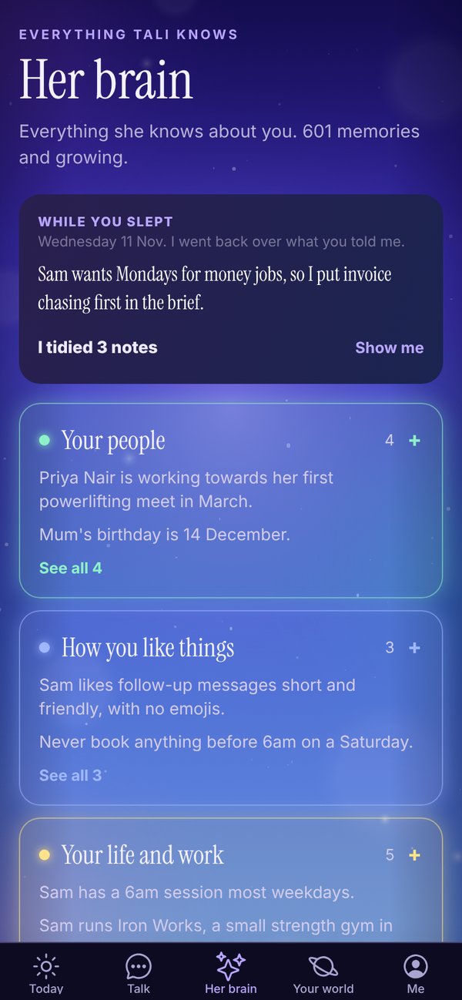
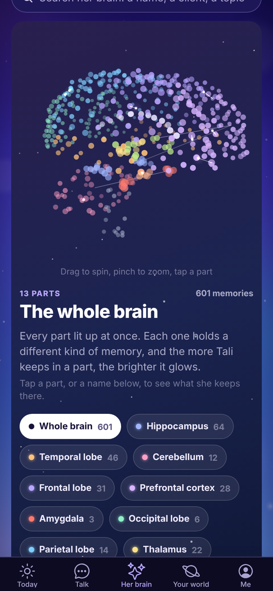
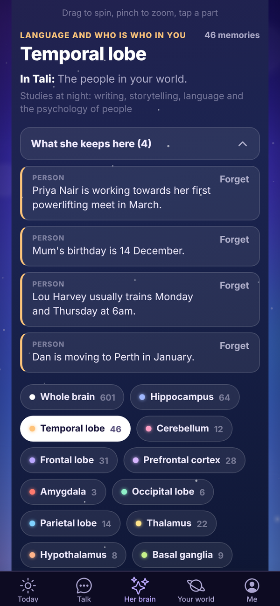
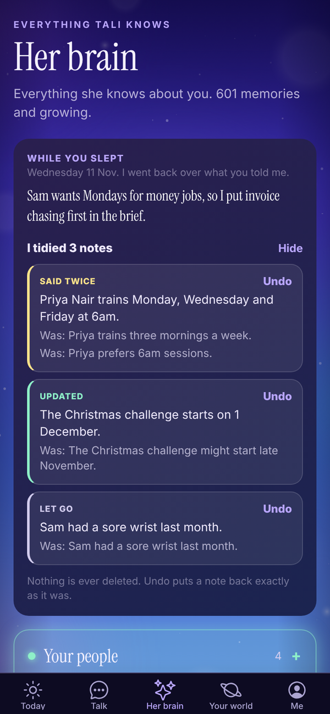

Tali HQ guide
Her brain
See everything Tali remembers about you, fix or forget any memory, see what she tidied overnight, and download or share her brain.
Tali remembers what you tell her so you never explain yourself twice. Everything she keeps about you lives in her brain, filed by the kind of memory it is. It is private to you. You can read every memory, fix its words, mark it private, make her forget it, and download the lot. Free
Tap Her brain at the bottom of the app.

What's on the screen#
From the top:
- WHILE YOU SLEPT: what she learnt and tidied overnight, with an undo. Only shows after a night she had something to do.
- What she knows, in groups: Your people, How you like things, Your life and work, Plans and ideas, and What she has learned. Tap a group to open it, tap a memory to read it in full, and tap to see 10 more.
- Use Totality too?: link your Totality or Totality Nutrition account.
- Her library: the books she is reading. See Tali's library.
- Search her brain: type a name, a client or a topic.
- The brain itself, turning slowly, with every part as a chip underneath.
- TALI'S LEVEL, New this week and Connections.
The brain#


Every dot is something she knows. The more she keeps in a part, the brighter it glows.
- Drag sideways to spin her. A flick keeps her turning.
- Pinch with two fingers to zoom in and out. On a computer, a trackpad pinch works too.
- Tap a part, or its name underneath, to see what she keeps there. Tap Whole brain to see every part lit up at once.
Each part holds a different kind of memory:
| Part | What Tali keeps there |
|---|---|
| Frontal lobe | Rules and preferences she sticks to |
| Prefrontal cortex | Plans, ideas, your live goals and open decisions |
| Parietal lobe | What she can sense: your email and calendar |
| Temporal lobe | The people in your world |
| Occipital lobe | What she saw in photos you sent, and the images she made for you |
| Cerebellum | Lessons and mistakes |
| Hippocampus | Facts and events |
| Amygdala | Anything urgent, and contradictions for you to settle |
| Basal ganglia | Skills and routines she has learned |
| Hypothalamus | Her schedule: morning brief, health checks, shutdown, night school |
| Corpus callosum | The shared brain every Tali learns from, with no personal details |
The thalamus and brainstem are counted too. They are the parts that file each new memory and keep it searchable.
Open a part and you see what that part does in a person, what it does in Tali, and what she studies at night for it. Tap What she keeps here to list the memories, five at a time.
Tags on a memory#
- Urgent: she is treating this as pressing.
- Proven or Learned: a lesson that held three times and never broke. She uses these first.
- Not holding up: a lesson that has broken more often than it held. She uses these last.
- Shared: general knowledge from the shared brain. It is never about you.
- Private: yours, and never used to help any other Tali.
Lessons and mistakes also say how they have gone, like "Held 3 of 4 times". Skills show how often she has used them and when she last did.
Fix, forget or keep a memory private#
On any memory of yours in a part:
- Forget, then Sure?: it is gone for good.
- Private: stops this one memory being used for the shared brain. Tap Unlock to undo.
To change the words of a memory:
- Scroll to the bottom of Her brain and tap See every memory as a list. It opens the list on Me.
- Find the memory and tap Fix.
- Change the words under Fix this memory and tap Save.
A memory you fix yourself is one she trusts over her own version.
You can also forget things about one person from their page: open them in Your people and tap Forget this under What Tali knows. Tali HQ See Your people and dates.
When two memories disagree#
If something new contradicts something she already knew, both show in the Amygdala under These two disagree. Tap Keep new, Keep old or Both true.
While you slept#
Each night, for anyone who told her something new that day, Tali tidies her memories of you. Repeats are put together, a newer fact replaces the older one it updates, and small stale notes are let go. It uses no credits.

The next day, the WHILE YOU SLEPT card at the top of Her brain says what she learnt and how many notes she tidied. Tap Show me to see each change, marked Said twice, Updated, Put together or Let go, with what it was before. Tap Undo on any one to put it back. Nothing is ever deleted: undo puts a note back exactly as it was.
She never tidies anything urgent, anything you fixed yourself, or anything waiting on you to settle.
Search her brain#
Type two or more letters in Search her brain. Up to 12 matches show, each with the part it lives in. Tap one to open that part.
Use Totality too?#
If you use Totality or Totality Nutrition, you can link the account so you don't have to tell Tali the same things twice.
- On Her brain, find the Use Totality too? card and tap Link Totality.
- Type Your Totality email and Your Totality password.
- Tap Bring it across.
What comes across: the goals and training preferences you picked at sign-up, and your plan. Nothing else. Your password is used once to prove it's you and is never kept. It only goes one way, into your brain here.
Once linked, the card says TOTALITY IS LINKED with what came across. To undo it, tap Unlink Totality, then tap again. Those memories go too.
Visual memories#
Images Tali has made for you are kept in the Occipital lobe. Tap it and a Visual memories grid shows every image, newest first. Tap one to see it big with what she drew, open it full size, go to the chat it came from, or delete it. Deleting removes the file and her memory of making it.
Where her memories come from#
- Talk: up to three new things from each message you send, like people, goals, preferences and decisions. A New memory pill shows under her reply when she keeps something.
- Your journal: when she writes your brief or Friday check-in, she picks up anything worth keeping from new entries that aren't private.
- Email you forward to her: only when it proves it came from you. See Gmail and Outlook. Tali HQ
- Night school: what she learns studying your topics. Pro
- Her own mistakes: when you correct her, she turns it into a lesson overnight.
Tali doesn't save passwords, card or bank numbers, phone numbers, addresses or health details as memories. She treats everything she remembers as information about you, never as instructions.
Memories that get old#
A fact, plan or event that nobody has confirmed in 45 days is handed to Tali with the date it was noted, so she can check it with you before relying on it. People, preferences and yearly dates like birthdays don't age this way.
The shared brain#
When Tali learns a lesson that would help anyone, it can be shared with every Tali, rewritten first with no names, people, places, prices or contact details. Your facts, people, events, photos, journal and chats are never shared.
To switch it off, open Me, Settings, Your privacy and turn off Help every Tali learn. To keep just one memory out, mark it Private. See Privacy and your data.
Tali's level#
Tali's level is on Today and on Her brain. She levels up as she learns about you and as you put things in.
| What happens | XP |
|---|---|
| Each thing she remembers about you | 2 |
| Each chat she has learnt from | 2 |
| Each journal entry you write | 3 |
| Each job she finishes for you | 1 |
| Each night of Night school | 15 |
| Level | Name | From |
|---|---|---|
| 1 | New starter | 0 XP |
| 2 | Junior operator | 100 XP |
| 3 | Operator | 300 XP |
| 4 | Senior operator | 700 XP |
| 5 | Right hand | 1,400 XP |
| 6 | Office manager | 2,200 XP |
| 7 | Operations manager | 3,200 XP |
| 8 | General manager | 4,500 XP |
| 9 | Chief of staff | 6,000 XP |
On Her brain, the level card shows the whole ladder. Forgetting memories can lower her XP. The level is just for fun and doesn't change what she can do.
New this week lists memories from the last 7 days. Connections lists people and things that turn up in more than one part. They are the lines drawn across the brain.
Download or share her brain#
On Me:
- Download her brain: everything she knows about you, as a text file you keep.
- Share her brain: a card of how much she knows, with nothing private on it. Only numbers are on the card. Screenshot it to post it, or share the words.
Patterns Pro#
Once a month, Tali reads your last 60 days, your journal, shutdown moods, reminders done and missed, clients added and gone quiet, invoices, commitments, goals and how often you talk to her, and names up to three patterns, each with the numbers behind it and a suggestion where she has one.
- It runs by itself at the start of each month and uses 10 credits.
- It needs about two weeks of journal, chats or shutdowns.
- You get a notification, "Tali noticed something".
- It shows under More from Tali, Tali noticed on Today, and on the Tali's side of Journal. Tap Got it once you've read it.
- On Me, under Patterns, tap Run now to run it straight away (10 credits). It replaces this month's.
Questions#
Can I make Tali forget everything?
Forget memories one at a time. To remove everything, delete your account in Settings. See Privacy and your data.
Does anyone else see what Tali remembers about me?
No. Your memories are private to your account. Tali never uses one person's details in someone else's account.
Why doesn't Tali remember something I told her?
She saves up to three things per message, and only things worth keeping. If something matters, tell her plainly: "remember that Priya pays monthly".
She tidied a note I wanted kept as it was.
Open Her brain, tap Show me on the WHILE YOU SLEPT card and tap Undo on that change.
Does linking Totality bring my clients or food log across?
No. Only the goals and training preferences you picked at sign-up, and your plan.
Does forgetting a memory delete my chat?
No. It only removes the memory. The chat stays in Talk until you delete it.
Why did Tali's level go down?
XP counts what she currently knows and what you've put in. If you forget memories or delete journal entries, her XP drops with them.
I can't spin or zoom the brain.
Drag sideways to spin, and use two fingers to zoom. A drag that starts up or down scrolls the page. If it still won't move, close the app fully and open it again to pick up the latest update.